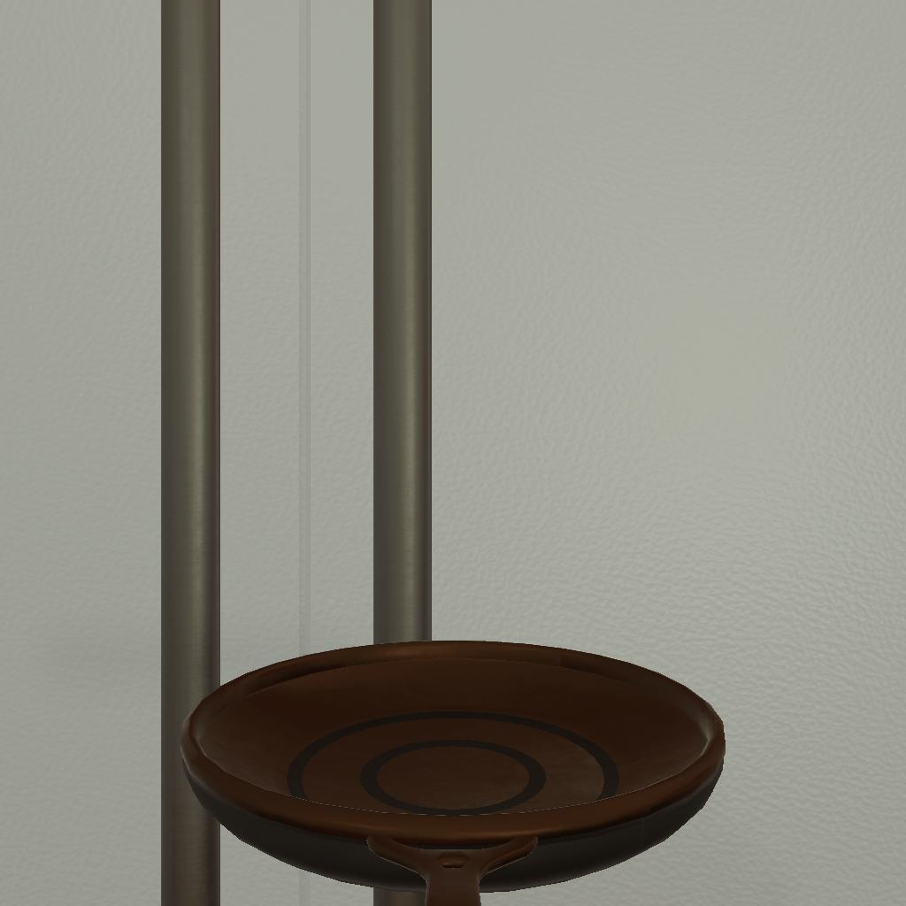

---------------------------------------------------------task: 17---------------------------------------------------------
--------------------------------------------------------------------------------------------------------------------------------------------------------------------
--------------------------------------------------------------------------------------------------------------------------------------------------------------------
Step:--------------------------------------------------------------------------18-------------------------------------------------------------------------------
----------------------------------------
VLM Prompt:
Image1:
Image2:
Image3:
**Instruction**
1. Analyze the provided images to identify all visible household objects and compare the difference between images (e.h. whether the object is opened or not and taken on hand or not), focusing on those relevant to the task description "put a cool pan in stoveburner."
2. Use the analysis of images and the task hint "The agent must find an object of the desired type, pick it up, go to a fridge, cool the object with the fridge, then find the correct location to place it, and put it down there. The agent does not need to use the fridge button or open the fridge to cool the object, and the agent just needs to do action that is "cool the object with the fridge"." to answer the question: what is the most reasonable action in the choices for the task description "put a cool pan in stoveburner"?
3. Decide and write the answer using the template: The answer is: (i): , where i is the real number. If there is no desired object in images, search every place based on **Initial Observation** to find the object. And if no one is exactly correct, choose a similar answer.
**Initial Observation**
You are in the middle of a room. Looking quickly around you, you can see cabinet (1-14), countertop (1-2), microwave (1), drawer (1-5), sink (1), sinkbasin (1), coffeemachine (1), stoveburner (1-4), toaster (1), fridge (1), diningtable (1), garbagecan (1), safe (1)
**Answer Choices**
(1): go to cabinet 1
(2): go to cabinet 2
(3): go to cabinet 3
(4): go to countertop 1
(5): go to cabinet 4
(6): go to cabinet 5
(7): go to microwave 1
(8): go to cabinet 6
(9): go to drawer 1
(10): go to drawer 2
(11): go to drawer 3
(12): go to cabinet 7
(13): go to cabinet 8
(14): go to sink 1
(15): go to sinkbasin 1
(16): go to coffeemachine 1
(17): go to cabinet 9
(18): go to cabinet 10
(19): go to drawer 4
(20): go to cabinet 11
(21): go to stoveburner 1
(22): go to stoveburner 2
(23): go to stoveburner 3
(24): go to stoveburner 4
(25): go to cabinet 12
(26): go to toaster 1
(27): go to drawer 5
(28): go to countertop 2
(29): go to cabinet 13
(30): go to cabinet 14
(31): go to diningtable 1
(32): go to garbagecan 1
(33): go to safe 1
(34): open fridge 1
(35): close fridge 1
(36): examine fridge 1
**Answer**
Let's think step by step by following the instructions.
----------------------------------------
----------------------------------------
Original Response:
The task is to "put a cool pan in stoveburner." From the images provided, we can see a pan on what appears to be a stoveburner. All three images seem identical, with no visible difference in the state of the pan or stoveburner. Therefore, we can assume the pan is already in place on the stoveburner.
Given the task hint, we need to cool the pan using the fridge without the need to open the fridge or use a button. Since the pan is already on the stoveburner and the images do not show a fridge, we must infer the next reasonable action.
Based on the initial observation, there is a fridge in the room. The most reasonable action would be to go to the fridge to cool the pan as described in the task hint. Since there is no specific action listed for cooling the object with the fridge and the provided actions only include going to different objects or interacting with the fridge, we will select the action to go to the fridge.
The answer is: (36): examine fridge 1.
----------------------------------------
----------------------------------------
>>> Refine Original VLM Response and Get Pure Action: examine fridge 1
----------------------------------------
-----------------------------------------------------------------
Running time: 15.272657632827759 seconds
Total Money: 10.524920000000002
-----------------------------------------------------------------
-----------------------------------------------------------------
Text Observation:
-----------------------------------------------------------------
UNSUCCEED